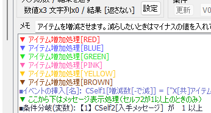
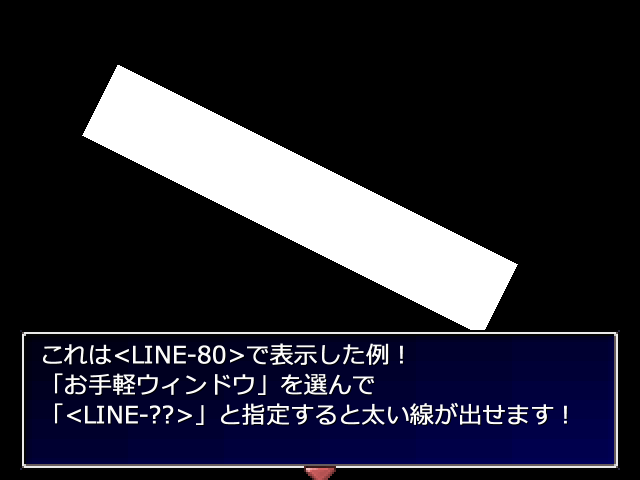

|
|||
| 【Ver3.390～3.396のアップデート内容】 2024/08/26～ バグ修正や調整です。 【ゲーム部分】 Ver3.395 2024/09/09 ●【セーブ･ロード操作/不具合】Zオーダーを使用したピクチャが表示されている状態で セーブデータの変数を読み込むとピクチャが消えることがあるバグを修正 Ver3.393 2024/08/29 ●【セキュリティ機能/調整】セキュリティ強度の調整に抜けがあったのを修正 Ver3.392 2024/08/28 ●【ピクチャエフェクト】「Zオーダー」を使用したピクチャを表示した状況で データをロードすると特定条件でクラッシュしたり ピクチャが残ったままになってしまうバグを修正 Ver3.391 2024/08/27 ●【起動時(プロ版のみ)/不具合】プロテクトキーを設定したゲームデータだと GamePro.exeが起動できなくなっていたバグ修正 → Ver3.383あたりから動かなくなっていたようです。 Ver3.390 2024/08/26 ●【DB操作/調整】CSV読み込み時、タブ区切りのCSVも読み込めるように修正を試みました。 ●【DB操作/不具合】「CSVへ保存」時、文字列内の「"」が「""」に変換されていないバグを修正。 （なお読み込み時は正常に「""」を1つの「"」として読み込んでいました） → 「Game.exe動作バージョン調整」を「旧Ver3.353時点の挙動で動作」にすると 従来通り、「"」が変換されないままでCSV保存されます。 → 文字列中の「"」がデータ上で「""」にならないと、 ExcelなどでCSVを読み込む場合に問題になります。 ●【セキュリティ機能/調整】セキュリティ関連機能を修正しました。人によっては Windows DefenderからGame.exeがウィルス扱いされてしまうことが判明したので、 不便しない程度にセキュリティ強度を調整中です。 【エディター部分】 Ver3.396 2024/09/13 ●【プロ版/プロテクトキー機能/不具合】Ver3.395で起動すると プロテクト確認が出続けてしまい、正しいプロテクトキーを入れても 起動できなくなるバグ修正 → この症状が発生した場合、「Ver3.396」以降で起動して 「正しいプロテクトキー」を入れて起動することで問題を解消できます。 （プロテクトキーがかかっていない、と出ますが、それはGame.datだけ かかっていないだけで、他ファイルはかかっている変な状態になっています） Ver3.395 2024/09/09 ●【変数操作+/調整】「その他」の 「このマップイベントＩＤ（ｺﾓﾝなら呼び出し元ﾏｯﾌﾟID）」の名前を 「このマップイベントＩＤ（ｺﾓﾝなら呼び出し元ﾏｯﾌﾟｲﾍﾞﾝﾄID）」に修正 ●【イベントコマンド表示欄】条件分岐の各分岐の灰色のカラーを濃いめに修正 Ver3.394 2024/09/01 ●【データベースウィンドウ/不具合】Ver3.393から、Windowsでの拡大率100%の 1366×768などでデータ入力欄の表示がおかしくなっていたバグ修正 ●【エフェクト/調整】キャラエフェクトの「アニメ速度」を「アニメ頻度」に変更 （動作指定内と呼び名を統一） Ver3.393 2024/08/29 ●【バージョン3コンバート処理/調整】大規模なゲームデータのコンバート処理が 大幅に高速化されました。 ●【データベース/不具合】Windowsの拡大率150%などの環境で DBウィンドウの表示がおかしくなっていたバグ修正 ●【変数操作・検索/不具合】検索で【数値】の"1100000000"を検索したとき、 「変数操作」で「可変DB」選んだときのイベントコマンドが 内容にかかわらずヒットしてしまうバグ修正 Ver3.390 2024/08/26 ●【コマンドライン/不具合】-gamedata（ゲームデータ作成）コマンドを使用したとき、 -cryptコマンドが指定されていないと 自動で「暗号化なし」になってしまうバグを修正 → 本来は-cryptコマンドなしであれば「前と同じ」設定で暗号化されるはずでした。 ●【DBウィンドウ/不具合】「ファイルの出力」の「データ[複数･CSV形式]」による CSV出力時、「"」が「""」に変換されていないバグを修正 ●【DBウィンドウ･コモンイベントの入力内容の設定/不具合】 DBの「項目名」や、コモンイベントの「入力する値」や「結果」の「名前」に 半角「&」を使うと変な表示になるバグを修正 |
| 【Ver3.360～3.385のアップデート内容】 2024/07/16～8/19 バグ修正や調整と、ちょっとした新機能搭載です。 【新機能】 Ver3.385 2024/08/19 ●【Editor.exe/新機能】コマンドライン上からEditor.exeを操作し、 直接「ゲームデータ作成」ができる機能を追加しました。 たとえばコマンドプロンプトから「Editor.exe -gamedata」と実行すればエディタを起動せず 「前に作ったゲームデータ」と同じ設定でゲームデータを作成することができます。 コマンド指定を付けてゲームフォルダ名や出力先フォルダ、暗号化の方法などを詳しく設定することもできます。 「Editor.exe -gamedata -name "サンプルゲーム" -output "D:\temp\" -crypt DIR -c_dir "BasicData/BGM/Picture" -c_ver 331」 各コマンド指定の意味は以下の通りです。
Ver3.380 2024/08/03 ●【コモンイベントウィンドウ/新機能】コモンイベント名の色に 「薄赤」「薄青」「薄緑」「ピンク」「橙色」を追加 Ver3.371 2024/08/03 ●【コメント文/新機能】コメント文に以下のいずれかの文字列を含めることで コメント文の行の色を変えられる機能を追加。 → [RED]、[BLUE]、[GREEN]、[PINK]、[YELLOW]、[BROWN]  【ゲーム部 修正点】 Ver3.385 2024/08/19 ●【ゲーム処理全体/不具合】珍しい音声の問題が内部的に起きた後、以後の ゲームプレイがずっと低FPSになってしまう問題を修正。 → この問題が起きた場合、十分な性能のPCでも内部処理が 最大51FPSくらいしか出なくなってしまっていました。 Ver3.383 2024/08/14 ●【起動時/調整】外部ツールなどによる「正規の署名がないDLL」を そもそも読まないように修正。 → 外部ツールを利用されているプレイヤーの方には毎回 「読み込まれたDLLの正規署名がない」エラーが出てましたが、 今後はDLL読み込み自体を弾くようになるので、ほぼ以前通りの感覚で Game.exeを扱えるようになることが期待できます。 → ただ代わりに、VirusTotalによると火绒(フォロン/Huorong) という セキュリティベンダーにのみウィルス扱いされるようになりました。 その1件のベンダー以外ではウィルスとして検出されなかったので、 ひとまずこのまま様子を見る予定です。 Ver3.380 2024/08/03 ●【起動時/調整】「正規の署名がないDLL」が読まれたときのセキュリティ警告時、 「はい」を選ぶと「管理者として実行」で起動し直せるように修正。 また、メッセージも分かりやすく修正。 → 「管理者として実行」するとほとんどの「署名のないDLL」を 読まなくなるようです。 →【表示される文章】 以下のDLLを使用するソフトウェアまたはデバイスの安全が 確認できないため、ゲーム実行が中断されました。 [DLL名] 【!!】「管理者として実行」するとこのDLL読込を回避して プレイできる可能性があります。「管理者として実行」しますか？ (「はい」なら次に確認画面が出ます) ●【サウンド】効果音を連続再生したときの負荷が高くなっていたのを修正。 Ver3.345以降のみで発生していたようです。 Ver3.371 2024/08/03 ●【F2クリップボード貼付/調整】Game.iniの 「SelectedText_to_ClipBoard_F2=」を「1」にした場合、 F2によるクリップボード貼り付け機能で、 マウスカーソルを「文章の表示」部分や「選択肢」上に 移動させてF2を押した場合もクリップボード貼付されるよう修正。 また、より直感的にクリップボード貼り付けできるようになりました。 → たとえば、 ・「選択肢をキーで上下移動 → F2」なら「いま選ばれている選択肢」が、 ・「選択肢が出た後にマウスカーソルを移動させて各選択肢上でF2」なら 「マウスカーソル下の選択肢（ゲーム側で選択されていなくても）」が クリップボードに貼り付けされます。 Ver3.370 2024/07/27 ●【起動時/調整】正規の署名がないDLLが読み込まれて ゲーム停止させられたときのエラー文に、 「管理者として実行」することで回避できるという記載を追加 ●【デバッグ文/不具合】ValWatch（変数監視）機能をオンにしたとき、 データベースの「全データ初期化」「全項目初期化」 「データの挿入/抜き取り/コピー」にも反応するよう修正 【エディター部 修正点】 Ver3.385 2024/08/19 ●【ゲームデータ作成（プロ版）/不具合】プロテクトキーが未設定の場合、 ゲームデータ作成時にiconファイル欄が保存されないバグを修正 Ver3.384 2024/08/16 ●【システム文字列/不具合】SysS19が「[読]ｻｰﾄﾞﾊﾟｰﾃｨ実行識別ID」に なっていなかったミスを修正 Ver3.383 2024/08/14 ●【サウンド/調整】「ループ位置[ms]」表記を「ループ開始[ms]」に修正。 ループ終了位置なのか開始位置なのか明確でなかったためです。 ●【システム文字列/追加】「SysS19：[読]ｻｰﾄﾞﾊﾟｰﾃｨ実行識別ID」と命名。 → ブラウザ上での動作など「PCで直接起動される以外」の環境で 実行されたとき、その環境名の文字列（ブラウザ化の「PLiCy ～～」など）が 格納されるシステム文字列として用意されています。 これが使われているか否かはサービス提供側に依存します。 → EXEとして実行されたときは空白になります。 Ver3.382 2024/08/04 ●【グラフィック選択/不具合】「ピクチャ」コマンド内でファイル変更すると Windows10でクラッシュすることがあるバグを修正 ●【マップEv・コモンイベントウィンドウ/不具合】イベントコマンドのコピーや削除をした後、 内部的なコマンド選択位置が見えている場所と ずれてしまうことがあるバグ修正 Ver3.381 2024/08/04 ●【グラフィック選択/不具合】マップEvの(タイルセット)チップを変更したとき キャラチップに切り替えるとスクロールが画像の外に いってしまうことがあるバグ修正 Ver3.380 2024/08/03 ●【場所移動の「移動先を見ながら指定」/不具合】 「スペースを押しながら」のスクロール挙動が不安定だったバグ修正 Ver3.371 2024/08/03 ●【DBウィンドウ/不具合】起動→終了を繰り返すたびにDBウィンドウの座標が 少しずつずれていくバグを修正 ●【マップイベントウィンドウ/調整】マップイベントのキャラチップとして 「（タイルセット）」が設定されている場合に画像を変更した際、 自動で選ばれているチップの位置までスクロールするように修正 ●【チップ選択 / タイルセット設定 / 場所移動の「移動先を見ながら指定」調整】 これまで中クリックを押しながらスクロールできた部分を、 「スペースを押しながら」でもスクロールできるよう修正 Ver3.370 2024/07/27 ●【マップ編集・場所移動/不具合】マップ表示のスクロールバーが 32678ピクセル以上の位置にあると正常に動作しなくなるバグを修正 → 48タイルサイズの約700マス目あたりから 正常にスクロールできなくなっていました。 ●【文章の表示/調整】「入力のたびに消去」チェックの機能を分離して 「2回改行で自動入力」チェックを追加 → 元は「入力のたびに消去」がオンだと2回連続改行で 自動入力になっていましたが、誤解の元なので分離しました。 ●【文章の表示/不具合】「入力のたびに消去」がオンのとき、 文の途中に改行が2つ入っていても2回改行扱いで 自動入力されてしまうバグを修正。 ●【文章の表示/新機能】文字色の確認機能を下部に追加(顔確認機能と兼用)。 ●【データベースウィンドウ/不具合】DBでのファイル選択時、存在しない ファイルが設定された状態で「File」を押すと、どんな初期フォルダに 設定されていても「Picture」フォルダから読み込んでしまう現象を修正 ●【データベースウィンドウ/不具合】「保存時はフォルダ名を省く」が オンになっていても1フォルダ分しか省かれないようになってたのを修正 Ver3.360 2024/07/16 ●【ゲーム基本設定】「ゲーム基本設定」の「Game.exe動作バージョン調整」に 「現Ver3.353の挙動で動作」を追加（追加し忘れていました） |
| 【Ver3.350～3.353のアップデート内容】 2024/07/04～07/15 【ゲーム部 修正点】 Ver3.353 2024/07/15 ●【マップイベント/不具合】9100000などの変数指定でマップEvのX・Y座標を変えて 移動させたとき、「待機時アニメがオフ」かつ「移動時アニメがオン」の 場合に「移動アニメ」をしなくなる場合があるバグを修正 → 「ゲーム基本設定」の「Game.exe動作バージョン調整」を 「旧Ver3.34時点の挙動で動作」に戻すと前の挙動に戻せます。 ●【ゲーム中】実行環境によってはゲーム実行中、MP3やMP4ファイルなどを再生したとき 「DLLに正規の署名がない」というエラーが出ることがある問題に対応 Ver3.351 2024/07/04 ●【F7ピクチャ一覧/不具合】ページの切れ目でピクチャ情報がスキップされて しまうことがあるバグを修正 Ver3.350 2024/07/04 ●【F7ピクチャ一覧/仕様変更】ピクチャの「文字列」に特殊文字を表示するよう修正。 F7画面中にCtrlを押すと特殊文字を隠して表示することができます。 ●【キー入力/不具合】「自動キー入力」を行ったとき、一部の処理が「非アクティブ時」に 受付されなくなってしまうバグを修正 （方向キー・ファンクションキー・マウスのXY自動入力） ●【文字列操作/不具合】「に↓のﾌｧｲﾙ内容読込」の隠しコマンド 「<<GET_MAPEV_FILENAME>>(マップイベントID)」において 違うキャラの「重ねキャラチップ」まで取得してしまうことがあるバグ修正 ●【パーティ画像/不具合】パーティ画像の操作が行われた際、位置変更や消去されたときに 「重ねキャラチップ」だけ位置も画像も残ってしまうバグを修正 【エディター部 修正点】 Ver3.353 2024/07/15 ●【コモンイベントウィンドウ/不具合】Shiftキーを押しながら「単体保存」をしたとき 生成されるtxtファイルが文字化けしていて読めないバグを修正 Ver3.352 2024/07/05 ●【検索ウィンドウ/不具合】コモンイベント名の「置換」処理をした後に クラッシュすることがあるバグ修正 Ver3.350 2024/07/04 ●【ゲームデータの作成/仕様変更】ゲームデータ作成画面を開いたとき、 すでに設定されている「出力フォルダ」が存在しない場合は 警告を表示した後、出力フォルダを初期値にリセットするよう修正。 → 「出力フォルダ」に問題がある場合に気付きにくかったため、 自動で警告表示＆出力フォルダを修正するようにしました。 |
| 【Ver3.340～3.346のアップデート内容】 2024/06/05～06/27 ・読み込む「BasicData」(基本データフォルダ)が変更可能になったため、 1つのゲームデータでの言語切り替えがやりやすくなりました（関連機能の一部はプロ版のみ搭載） ・ウディタのプロ版にてアイコン画像ファイル(icon???.png)の読み込みフォルダを 自由に変更できるようになりました（従来はBasicDataフォルダのみでした） 【新機能】 Ver3.340 2024/06/05 ●【システム文字列】システム文字列「SysS73[読]Basicﾃﾞｰﾀﾌｫﾙﾀﾞ」を実装。 現在の「基本データフォルダ」を返します。 ★基本データフォルダ：「ゲーム基本設定」「コモンイベント」「各データベース」「タイル設定」 「アイコン画像(icon????.png)」を読み込むフォルダのこと。 （※個別のマップファイル(.mps)は含まれません） → 通常は「BasicData」フォルダが「基本データフォルダ」になります。 ●【ゲーム基本設定Pro(プロ版)】「[Pro] アイコン画像(icon???.png)フォルダの設定」の 項目を追加。icon???.pngのようなファイル名のアイコン画像を 「基本データフォルダ(BasicData)」以外の フォルダから読み込ませることができます。 → 「基本データフォルダ」が切り替えできるようになったので アイコン画像だけ分離して置けるようにするためのものです。 ●【システム文字列(プロ版)】システム文字列「SysS74:[P]次起動Basicﾃﾞｰﾀﾌｫﾙﾀﾞ」を実装。 次回のGame起動時のみ、「基本データフォルダ」として 「BasicData」フォルダの代わりに 「SysS74に指定したフォルダ」を使って起動します。 → 次の起動時にはSysS74は空になるので、起動時の基本データフォルダを 毎回変えたい場合は再代入する必要があります。 →【例】たとえばSysS74に「SecondBasicData」を格納してゲーム終了すると、 次に起動する際は「BasicData」フォルダの代わりに 「SecondBasicData」フォルダを「基本データフォルダ」として ゲームが実行されます。 → これは言語切り替えを想定した処理です。たとえば、 「BasicData_EN」(英語版のデータが入ったBasicDataフォルダ)を作っておき、 ゲーム内で言語を「英語」に切り替えた際にSysS74に 「BasicData_EN」を代入して再起動すると、以後の起動時にも その基本データファイルを読ませることができます。 → SysS74に指定した内容はGame.iniに保存、読込されます。 ●【システム文字列】システム文字列「SysS75:[読]Game.exe起動時引数」を実装。 Game.exeの「起動時の引数」を返します。 → 例えばテストプレイ時にはSysS75に「Test_Of_Main」が格納されており、 さらにデバッグウィンドウがオンの場合はSysS75は 「Test_Of_Main Use_Debug_Window」のようになっています。 ●【システム文字列】システム文字列「SysS76:[読]OSの言語名」を実装。 起動したOS環境の言語を「Japanese」など英語の言語名で取得できます。 → 言語名の例としては、 英語：English 簡体字：Chinese (Simplified) 繁体字：Chinese (Traditional) など。「ISO 639による言語名」だそうですが、中国語などは上のように ()で区別されることもあるようです。 ●【プロ版機能(プロ版)】「ゲーム再起動(引数設定あり)」コマンドを追加。 再起動時、任意の引数を付けてGamePro.exeの再起動ができます。 → 後述の新機能を駆使すれば、再起動時に 「基本データフォルダ」を別のフォルダに切り替えたり、 ゲーム内で独自の引数を反映させる処理を作ることができます。 ※「テストプレイフラグ(Test_Of_Main)」と 「デバッグウィンドウフラグ(Use_Debug_Window)」が起動時に 指定されていた場合は、未入力でも 自動でこれら2つが引数の末尾に付け直されます。 ※なおこのコマンドとは別に、元からある 「ゲーム再起動(引数継承)」コマンドの方は 自動で起動引数がそのまま引き継がれます。 以下の-basicなども引き継がれるので気をつけてください。 ●【起動時引数】Game(Pro).exe起動時に使える引数として 「-basic <基本データフォルダ第一候補>」と 「-basic2 <基本データフォルダ第二候補>」を追加。 → たとえばコマンドプロンプトやbatファイルなどから 「Game.exe -basic Basic1st -basic2 Basic2nd」 のように指定してゲーム起動すると、 「基本データフォルダ」として「BasicData」フォルダの代わりに 第一候補の「Basic1st」フォルダを使ってゲームを起動しようとします。 もし「Basic1st」フォルダがなければ第二候補の「Basic2nd」フォルダを、 それもなければデフォルトの「BasicData」フォルダを 「基本データフォルダ」として採用します。 →【注意】-basic/-basic2で指定された基本データフォルダは 「SysS74:[P]次起動Basicﾃﾞｰﾀﾌｫﾙﾀﾞ」よりも優先されて読み込まれます。 ●【起動時引数】Editor(Pro).exe起動時に使える引数として 「-basic <基本データフォルダ>」を追加。 使い方は↑と同じです。「-basic2」はありません。 → 利便性アップのため、Editor上で「テストプレイ」をした場合は自動で 「-basic <変更されたフォルダ名>」を付けてGame.exeが起動されます。 【ゲーム部 修正点】 Ver3.345 2024/06/26 ●【サウンド】プレイ中にサウンドデバイスが1個以上から0個になったとき、 新たに非MIDIのBGM/SEを再生するとクラッシュする問題を修正。 → 直せるクラッシュ問題は可能な範囲で直そうとしていますが、 ライブラリ側の都合っぽい部分で直せていない問題が他にもあるので、 基本的にはプレイ中にサウンドデバイスを全て無効化しないでください。 Ver3.344 2024/06/26 ●【サウンド】音声再生中にサウンドデバイスが1個から0個になったとき、 クラッシュすることがあった問題を修正 （ライブラリの側で対応していただきました） ●【文字列操作】「をファイル↓に出力」で\f[]などの特殊文字入りの文字列を ファイル出力した場合、正確に復元されなかったり、<R>が<R>^になったり、 クラッシュすることがあった問題を修正 → ただし「\\」は1つの「\」に変化して出力されるのが正常な挙動です。 他にも\cself[?]の変数代入特殊文字などは変換後の内容で出力されます。 ●【ピクチャ】「直接ファイル指定」時、ファイルの読み込みに失敗した場合に限り \s[0]などの特殊文字を変換して読み込みを再試行するように修正。 要するに代入型の特殊文字が反映されるようになります。 → 従来、ピクチャの「ファイル指定」では特殊文字が変換されませんでした。 → 「読み込み失敗時」だけ行うのは、過去に作られたファイル指定の挙動が 変わらないようにするため、ないし処理速度を遅くしないための措置です。 ※つまり、Data\s[15]\AAA.pngと入れても、もしData\s[15]\AAA.pngのような ファイルがあった場合は\s[15]が変換されずにそのまま読み込まれます。 → ただし処理順の都合で、<SQUARE>などの特殊図形や<CUT/～><SCREENSHOT>処理を 特殊文字で指定してもエラーが出るのでご注意ください。 Ver3.342 2024/06/16 ●【ゲーム基本設定】ゲーム実行時の「Game.exe動作バージョン」は、 「最後にEditorで編集されたバージョン」を 動作バージョン最大値として実行するよう修正。 一言で言うと「編集時点の動作が再現される」ので将来も動作が安定します。 → たとえば「Ver3.350」のEditorで編集された 「最新版の挙動で動作」に設定されているゲームデータは、 それより最新のEditorで編集されない限り、未来のVer3.999のGame.exeで 実行されても「Ver3.350の挙動」で動作するようになります。 Ver3.340 2024/06/05 ●【ゲーム基本設定】「ウィンドウ非アクティブ時の挙動」が「処理を停止」のときは、 「Sys29:プレイ時間（1秒単位）」と「Sys30:[読]プレイ時間(ﾐﾘ秒単位)」が 非アクティブ時に増加しなくなるよう修正 → 従来は非アクティブの時間分も再アクティブにしたときに 反映されてしまっていました。 → 「ゲーム基本設定」の「Game.exe動作バージョン調整」を 「旧Ver3.31時点の挙動で動作」に戻すと前の挙動に戻せます。 ●【ゲーム基本設定】動作バージョン調整の「旧Ver3.155時点の挙動で動作」を含む 以前のバージョン挙動において、「動作指定」の挙動が 一部、期待通りでなくなっていたバグを修正 → 昔のバージョン挙動にしていた場合、動作指定が一部おこなわれなくなる 現象が発生していました。 ●【ピクチャ】移動中のピクチャに「フレーム」指定ありの「相対」座標の 「表示」「移動」をした際、ピクチャX・Y座標がマイナス（画面外）の状況だと プラス値の（画面内にある）ときと比べて移動量にずれが生じる問題を修正 ●【キー入力】「ウィンドウ非アクティブ時の挙動」が「処理を停止」のとき、 非アクティブ中に回した「ホイール回転」が、再アクティブにしたときに 一気に反映されてしまうバグを修正 ●【プロ版機能】おそらくVer3.31頃から「ゲーム再起動」コマンドが 正常に動作していなくなっていたバグ修正 ●【F7ピクチャ一覧】画面サイズX1280超のとき、画面サイズを縮小したときに ピクチャ個数の X/Y の表記が画面外に出てしまうことがあるバグ修正 ●【起動時引数】-fでなく-faaaのような引数でも-f処理が行われてしまうバグを修正 【エディター部 修正点】 Ver3.346 2024/06/27 ●【コモンイベント】コモンイベント挿入などで「該当なし」が選択されている コマンドを「編集」するとクラッシュするバグを修正 → Ver3.344～3.345のみ発生していました。 Ver3.344 2024/06/26 ●【コモンイベント】コモンイベント挿入などを「編集」したとき、 「文字列の入力」個数が元の状態から増えていた場合に 空で選択不能なプルダウンメニューが表示されてしまうバグを修正 Ver3.343 2024/06/17 ●【データベースウィンドウ】自動ウィンドウサイズ修正機能の副作用で 変なサイズになったりクラッシュする可能性が 起きていた問題の修正を試みました。 Ver3.342 2024/06/16 ●【データベースウィンドウ】ディスプレイ解像度が小さいと OKボタンなどが画面からはみ出すので、ディスプレイ解像度に応じて データベースウィンドウ、タイプ設定ウィンドウを 必要なら自動で縮小して表示する機能を追加。 ●【場所移動】「移動先を見ながら選択」画面でマップイベントの 「半歩上に設置」「半歩左に設置」が反映されていなかったのを修正 Ver3.341 2024/06/06 ●【マップ選択】Ver3.340でMapTree.datの読み込み先が変わってしまっていたバグ修正 Ver3.340 2024/06/05 ●【上部メニュー】「コンフィグを開く」を「Game.exe用コンフィグを開く」に修正 ●【エディターオプション】イベントコマンド挿入ウィンドウ設定の「初期状態」ボタンを押すと 「ダウンロード」コマンドが「表示順」欄から消滅するバグ修正 【基本システム 修正点】 2024/06/17 Ver3.28に更新 ●Ver3.27の状態異常の表示位置の修正にミスがあったのを修正 [ｺﾓﾝ90/123～129行] 2024/06/16 Ver3.27に更新 ●320x240[x2]以外の画面サイズで主人公が状態異常になると、 不自然な位置に状態異常が表示されるバグ修正 [ｺﾓﾝ90/123～125行、ｺﾓﾝ178/125～127行] |
| 【Ver3.330～Ver3.338のアップデート内容】 Ver3.330 2024/04/29～ マップファイルやセーブデータのサイズが大幅減少！ ゲーム中のマップ読み込みやセーブ・ロード処理も高速化されました！ マップイベントの「前Page方向引継」機能や、ファイルのサブフォルダ内読込指定もちょっと便利です。 【新機能】 Ver3.337 2024/05/10 ●【ピクチャ】特殊図形に「<LINE-??>」を追加。太さ??の線を書くことができます。  Ver3.330 2024/04/29 ●【マップイベント】各ページに「前Page方向引継」のチェックボックスを追加。 オンにするとマップイベントのページが切り替わっても 前ページの「方向」と「パターン」をそのまま引き継ぐことができます。 → ただし直前が「どのページの起動条件にも該当しない」場合は、 このチェックがオンになっていても新たに切り替わったページの 「初期方向」「初期パターン」で出現します。 ●【変数操作＋】「キャラ」に「不透明度」の取得機能を追加。 ●【変数操作＋】「ピクチャ」に「基準位置[0左/10中央/20右+0上1中2下]」の 取得機能を追加。 → 基準位置が左上なら0、中心なら11、右上なら20、右下なら22を返します。 【ゲーム部 修正点】 Ver3.338 2024/05/26 ●【デバッグ機能 ValWatch】ValWatchの以下の反応漏れや行数ずれを修正。 ・「コモンイベント呼び出し」時にも反応するよう修正 ・「動作指定」内の変数操作でも反応するよう修正 ・「キー入力受け付け」の「基本」において 「キー入力待ち」にした場合だけValWatchの行数が1行ずれるのを修正 ●【F7ピクチャ一覧】1ページあたりに表示されるピクチャ数がおかしくなっていたバグを修正。 Ver3.337 2024/05/10 ●【起動時処理】GuruguruSMF.dllがバージョン4.0.5のままだと 起動時に正規の署名がないと言われてしまうバグを修正 Ver3.335 2024/05/06 ●【サウンド】BGM・BGSを「ファイル名で指定」で再生したとき、同じ曲を2回鳴らすと 2回目以降、システム変数の「Sys100～101:BGM/BGS音量補正」の割合をかけた値が 「Sys95/97:再生中BGM/BGS音量[%]」に格納されてしまっていたバグを修正 Ver3.334 2024/05/03 ●【ファイル読み込み】パスに日本語文字が多く含まれていると実際は長くないパスでも 「ファイルパスが長すぎます」というエラーが出るバグを修正 Ver3.333 2024/05/01 ●【セーブ・ロード操作】特定状況で「セーブデータへの書き込み」による読み書きが 遅くなってしまう現象を修正 ●【セーブ・ロード操作】新たなファイルに「セーブデータへの書き込み」をしたフレーム中は 「Sys24:[読]ｾｰﾌﾞﾃﾞｰﾀ読込判定(1=成功 0=失敗)」が0のままだったのを 1を返すように修正。他、ファイルの削除・コピー・読み書きを 特定の順にするとSys24が0のままになってしまうバグも修正 ●【ファイル読み書き】「セーブ・ロード操作」や「文字列操作」のファイル出力・読込など 特に時間のかかるファイル読み書き処理では、 少ない回数でも500万回エラーが出るように修正 （無限ループしていた場合、500万回に達するまで数分以上かかるためです） Ver3.332 2024/05/01 ●【コンフィグ】「グラフィック表示モード」の「ソフトウェアモード」が 正常に反映されてなかったバグを修正 → この問題はVer3.330以降でのみ発生していました。 ソフトウェアモードにしてもDirectX関連の処理を行っていたため 仮想環境など一部の環境で実行できなくなる問題が起きていました。 ●【セーブ・ロード】対象ファイルがない状態で「セーブデータへの書き込み」すると 最初の1個目だけ変数が書き込まれなくなっていたバグ修正 → この問題はVer3.330以降でのみ発生していました。 Ver3.330 2024/04/29 ●【セーブ・ロード】ゲーム中のセーブデータの書き込み・読み込み処理を高速化しました。 ●【マップの読み込み】ゲーム中のマップファイルの読み込み処理を高速化しました。 エディター側のマップファイルの圧縮効果と合わせて、 巨大なマップの読み込み速度がかなり上がります。 ●【セーブ・ロード】セーブデータにデータ圧縮を行うようにしました。 →【例】サンプルゲームの開始直後のセーブデータのファイル容量が 従来の100KBから14KBまで削減され、最短クリア時点で21KBになりました。 基本的にはプレイを続けるほど圧縮率が低下していきますが、 ほとんどの場合、以前よりセーブデータの ファイルサイズが軽量になります。 ●【セーブ・ロード】ゲーム中にセーブデータのファイルが外部から変更された場合は、 最新のファイルの内容を読み直す処理を追加。 → 従来は一度読み込んだセーブデータがメモリにキャッシュされていたため、 同名のファイルが外部で差し替えられたり ダウンロード機能やプロ版のファイルコピー機能などで上書きされても そのセーブデータファイルの内容が(次回起動時まで) 反映されない問題がありました。 → 今後はファイルのタイムスタンプがゲーム内からの 最終読み込み/書き込み時と違う場合、 メモリでなくファイルから再読込するようになります。 ●【セーブ・ロード】2011年ごろ以前の古いPCだと、セーブデータのファイルが 常に破損する場合があるバグへの対応を試みました。 ●【F7ピクチャ一覧】特定の画面サイズの場合、F7ピクチャ一覧のスクロールバーの横幅が 異常に広がるバグを修正 ●【全体】古いPCでも問題が起きにくいよう、新しいCPU命令が使われる可能性のある、 速度への影響が少なそうなプログラムの最適化機能をカットしてみました。 【エディター部 修正点】 Ver3.338 2024/05/26 ●【データベースウィンドウ】数値欄の限界値を±20億に変更。 ●【データベースウィンドウ】数値の限界を超えで自動で値が修正された場合、 下部入力欄に値が反映されないバグ修正 ●【タイルセット設定】「1画像分CSV出力/読込」でオートタイル24～31が 選べなかったミスを修正 ●【コモンイベント】「イベントの挿入」で「このコモンからXXつ上下」を選んだとき、 常に「結果の値」の欄が選択不能になってしまうバグを修正 ●【コモンイベント】コモンイベントを選択したとき、無効な「数値」の「入力」欄に 過去に設定した「初期値」がセットされてしまう現象を修正 → 今後は無効な「入力」の数値初期値は常に「0」となります。 Ver3.337 2024/05/10 ●【コモンイベント】番号が存在しないコモンイベントが指定されている場合に 「編集」するとクラッシュすることがあるバグ修正 ●【コモンイベントウィンドウ】起動条件の変数プルダウンメニューの項目を 更新するタイミングを増加させました。 → 処理負荷の都合で特定状況で変数が更新されないようにしていたため。 今はよい方法を採用して、軽い負荷で更新が実現できています。 Ver3.336 2024/05/06 ●【キー入力】特定の操作をすると下部説明欄にキーボードのキー説明が 出っぱなしになったり、あるいは必要なときに出なくなるバグを修正 Ver3.335 2024/05/06 ●【データベース データ内容の特殊設定】フォルダ選択を3層までのサブフォルダに対応 ●【キー入力】数値入力ボックスを選んでも下部説明欄に変数名が 出なくなってしまうことがあるバグを修正 ●【サウンド】サウンドコマンド入力時の変数説明欄が消えてしまっていた問題を修正 Ver3.334 2024/05/03 ●【コモンイベント】コマンド入力後の「このコモンから-X」表記だけが 文字化けしているバグ修正（+Xの方は問題なしでした） Ver3.332 2024/05/01 ●【起動時】Editor.iniに初期マップが設定されてない場合、 0番のマップがあれば自動で開く機能を追加 ●【マップイベント】影番号の選択範囲を0～255番までに制限 → もともと255番までしか対応しておらず、 影番号を256以上にすると次開いたとき-256される問題がありました。 Ver3.331 2024/04/29 ●【空データ】Ver3.330のEditorで生成できる空データが破損していた問題に対応しました。 Ver3.330 2024/04/29 ●【マップファイル】マップファイル(.mps)にデータ圧縮を行うようにしました。 似たような空間や建物が多い場合、あるいは広いマップの場合、 .mpsファイルサイズの大幅な削減が期待できます。 →【例】3000x3000のマップを作り、何かマップチップを数マス書き込んで保存すると 従来「100MB以上」のファイルになるところが「400KB程度」になります （ファイルサイズが約1/250に！) そこまで極端でなくとも、サンプルゲームのSampleMapA.mpsが 従来52KBだったのが22KBにまで圧縮されることを確認しています。 → 【外部ツールを作られている方向けのヒント】 Ver3.330で保存した.mpsファイルの26～29バイト目に[解凍後のバイト数]が、 30～33バイト目に[圧縮後のバイト数]がint型(4バイト)で格納されており、 34バイト目以降の[圧縮後のバイト数]の範囲が LZ4圧縮（ https://github.com/lz4/lz4 のLZ4_compress_default関数） されています。 非プロテクト版であれば、その範囲にLZ4の解凍処理（LZ4_decompress_safe関数）を 行うことでほぼVer3.32以前と同様のデータフォーマットになるはずです。 ●【自動バックアップ】Ver3.330からマップファイルのデータフォーマットが変わるため、 Dataフォルダ内の「AutoBackup_Before_Ver3.33_MapFile」フォルダに .mpsファイルが自動でバックアップされます。 → もし前バージョンのEXEに戻したくなった場合は、 「AutoBackup_Before_Ver3.33_MapFile」内の各フォルダを Data内の各フォルダに上書きすることで、 少し前までのバージョンのEXEなら マップが読み込みできるようになると思います。 → 不要な場合は「AutoBackup_Before_Ver3.33_MapFile」フォルダを 消しても大丈夫です。 ●【マップの保存・読み込み】マップファイルの読み書き処理を高速化しました。 特に巨大なマップの読み込み・書き込み時間の短縮が期待できます。 ●【DB操作・条件（変数）・セーブロード操作・コモンイベント】 一部の変数プルダウンメニューを選択時、選んだ項目の内容が 下部説明欄に表示されるよう修正しました → 「DB操作」コマンド時などはプルダウンメニューの変数名が一部分しか 読めない問題がありましたが、これでいくらか読めるようになるはずです。 ●【ファイル選択】ピクチャやキャラ画像などのファイル選択時、 フォルダ選択欄に、サブフォルダ（さらに深い場所のフォルダ）も 表示されるように修正。ただし最大の深さは3階層までです。 →たとえば「BGM/01/Battle/test.ogg」のファイルが読み込めます ●【セーブ･ロード処理】変数プルダウンメニューのコモンセルフ変数の 「名前」が表示されるように修正 → 従来は「このコモンEv:Self96」とだけの表記になっていて、 コモンセルフ名が表示されていませんでした。 ●【マップエディタ】XまたはY座標が1000以上の場所にオートタイルを書き込むと そこから-1000された座標にもマップチップが上書きされたり、 正常に書き込めないことがあるバグを修正 → 長さ1000までのマップしか使わない前提で 内部処理が作られてしまっていました。 ●【マップ設定ウィンドウ】マップサイズの限界を「縦」または「横」は9999以下、 「縦×横」が10000000（1000万）マス以内になるよう制限しました。 → このあたりの面積から編集時の挙動が不安定になってしまうようです。 ●【セルフ変数使用状況】「コモンイベント」コマンドの「イベントの挿入」を 選んでいた際、入力値にコモンセルフ変数を入れても 使用状況一覧側では使用済みと判定されなくなっていたバグを修正 ●【コモンイベント】コモンイベントコマンドの「新表示」時、 コモン名に対応する番号が変わっていた場合は すぐ反映されるよう修正 ●【変数操作+・キャラエフェクト・イベント制御】コマンドウィンドウを 「表示」し直したとき、対象キャラを選ぶプルダウンメニュー内の マップイベントが更新されないことがあるバグを修正 ●【コモンイベントウィンドウ】各リストボックス内で右クリックした後に ショートカットキーを使うと、右クリックした方でなく、 「最後に左クリックしたボックス側」に対して 処理が行われてしまうバグを修正 【基本システム 修正点】 2024/04/28 Ver3.26に更新 ●移動時のレベルアップ時、成長パラメータの文字が はみ出す可能性があった問題を修正[ｺﾓﾝ70/232・259-260・287・315-319行] ●コメントの説明文が間違っていた箇所を修正 (×移動中のみ有効→○戦闘中のみ有効) [ｺﾓﾝ136/3行目] |
| 【Ver3.310～Ver3.322のアップデート内容】 ファイルのセキュリティを強化！ ほか、デバッグ関連機能も微調整！ → Gameの追加修正 Editorの追加修正 【大きな変更点】 Ver3.310 2024/04/11 ●【ゲームデータの作成】従来よりセキュリティ強度が大幅に向上した、 最新の暗号化処理を追加しました。 → 無料版では『Ver3.310暗号化(Game時全ﾒﾓﾘ読込)』、 プロ版ではさらにプロテクトキー設定時のみ 『プロテクトキー使用暗号化Ver1.1(Ver3.31～/Game時全ﾒﾓﾘ読込)』 が使用可能になります。 → 今回搭載されたこれらの『Game時全メモリ読込』型の暗号化は 無料版、プロ版共に、Game.exe起動時に .wolfファイル（プロ版なら指定した拡張子のファイル）を 全てメモリに読み込んでから起動します。 → メモリ全読み込みやセキュリティチェックなどにより、 暗号化を行ったゲームの初回起動時間が 以前より少し長くなる場合があります。 （開発者の環境で最低でも約+0.25秒） → [プロ版のみ ロード画像] ゲームデータが数百MBなど大きい場合は、 「ゲーム基本設定[Pro専用]」にて初期ロード画像を 『BasicData』フォルダ内の画像に設定すると、 暗号化したゲーム上での「ロード画像」読込タイミングが 少し早くなります。 →【専門的な話 DLLに正規の署名がないと言われて起動しない場合】 暗号化ファイルが存在する場合、ゲーム中のセキュリティ対策として 「DLLインジェクション」という攻撃への対策が実行されます。 「DLLインジェクション」はゲームの内部データや動作を変更したり、 秘密情報を抜き取ったりする攻撃です。 なんらかの「実行中のアプリから情報を取得するソフト」が 実行されている場合、それが安全・危険にかかわらず ゲーム起動時に以下のエラーが表示されます。 『読み込まれた以下のDLLに正規の署名がありません。 セキュリティ上の安全のため実行を中止します。 C:\～～～\<DLL名>.dll * 上記DLLを使用しているソフトウェアを終了して ゲームを再起動することでプレイ可能になる場合があります』 このエラーが出た場合は、上記に書かれている通り そのDLLを使用するソフトウェアを起動前に いったん停止させていただく必要がございますので、 あらかじめご了承ください。 ※この文面はプレイヤーの皆さまへの説明として引用してくださって構いません。 【ゲーム部 修正点】 Ver3.324 2024/04/19 ●【起動処理】最新の暗号化ファイルがある場合の実行時、AVX命令が使えない CPUを搭載した(およそ2011年以前の)PCで起動できなくなるバグの修正を試みました → 特定の環境では改善が見られましたがまだ動作しない環境はあるようです。 Ver3.323 2024/04/15 ●【起動処理】Dataフォルダの中に拡張子のないファイルがあると Game.exeが起動できないバグを修正 → Ver3.310以降に発生していたバグでした ●【デバッグウィンドウ】デバッグウィンドウのサイズが正しく記憶されておらず、 次の起動時に「ログ保存」ボタンなどが消えるバグを修正 Ver3.322 2024/04/13 ●【場所移動】トランジション準備中に「場所移動」したとき、移動先のキャラクターが 一瞬だけ先に表示されてしまうバグを修正 → Ver3.310以降で発生していました。 Ver3.321 2024/04/13 ●【キャラクター】主人公が移動アニメーションしなくなっていたバグを修正 Ver3.320のピクセル移動修正によって発生した副作用でした。 Ver3.320 2024/04/13 ●【エフェクト】「キャラ」の「ピクセル移動」を(α版)から(β版)に修正。 「4方向画像」だと「アニメも方向転換も行えない」問題が解消された他、 3フレーム内に1ピクセル以上「ピクセル移動」で動き続けた場合は 「移動アニメーション」をおこなうようになりました。 → これまでは 「8方向画像のときだけピクセル移動時に方向転換できて移動アニメーションする （ただしT・TX画像はアニメしない）」「4方向画像だと方向転換もアニメもしない」 という統一感のない挙動でした。 → 前の仕様にしたい場合は「ゲーム基本設定」で「旧Ver3.300以前の挙動」に することで戻すことができます。 ●【デバッグウィンドウ】デバッグウィンドウの表示・非表示を繰り返すと だんだんウィンドウサイズが小さくなってしまうバグを修正 ●【起動時】起動時のファイルパスが非常に長い場合、 エラーが出て起動を中止するように修正。 → パスが長すぎるとファイルが読めなくなってしまうためです。 ●【言語環境】ファイルパスに他言語の文字が入ってる状態で起動しても、 いくらか安全に起動しやすくなるよう修正を試みました。 ●【ゲームデータ出力】特定のプロテクトキーを設定してゲーム出力し、 セーブされたデータをロードするとクラッシュすることがあるバグ修正 → これはVer3.310以降のみ起きていた問題です。 ●【場所移動】マップサイズ(0,0)のマップに移動したときは 「マップ外に移動させようとしました」エラーを出さないよう修正 → Ver3.310よりマップサイズ(0,0)のマップに移動してしまう 謎の問題が起きるようになったらしいので応急処置です。 根本原因は今のところ不明です。 ●【場所移動】並列イベント内でキャラクターを「マップ外」に場所移動させ続けると クラッシュすることがあるバグを修正 Ver3.311 2024/04/11 ●【全体処理】追加したセキュリティ機能のせいでプチフリーズやフリーズが 発生する現象の修正を試みました Ver3.310 2024/04/11 ●【デバッグ表示機能】テストプレイ中のF7のピクチャ一覧の内容に、 最後に「ピクチャエフェクト」が実行されたイベント位置、 「最終[エフェクト]Ev」を表示するよう修正 ●【デバッグウィンドウ】デバッグウィンドウがサイズ変更可能に。 変更したサイズは次回起動時も引き継がれます （Game.iniに書き込まれます） ●【デバッグ文】デバッグウィンドウをUnicodeに対応。 → デバッグログの文字コードは(BOMなし)UTF-8になります。 → MS UI Gothicフォントで表示可能な範囲であれば特殊文字も表示可能になります。 ●【デバッグ表示機能(実質プロ版のみ)】横1280より大きい画面サイズにして ゲームの「ウィンドウサイズ」を縮小した場合、縮小された比率分だけ 各デバッグ表示や緑帯エラー文の文字などが拡大表示される機能を追加 （文字が小さくなりすぎて読みにくくなるため） ●【セーブ・ロード】未来のセーブデータが読み込まれたときに警告が出る機能を追加。 → 従来はこの機能がなかったので、古いGame.exeでVer3.310以降のセーブデータを 読み込むとクラッシュしたり破損していると判定されるかもしれません。 基本的に、一度新しいバージョンにしたら、古いバージョンには戻さないでください。 ●【セーブ・ロード操作】「セーブデータへの(変数)書き込み」で 「新たに作られた」セーブデータを「保存・読込」から読み込むと DB情報が一切ないため何も出ずにクラッシュしてしまうバグを修正。 代わりにエラー文が表示されるようになります。 ●【セーブ・ロード処理】特定の状況でデータ破損が確認されたとき、 「.brokenファイルに置き換えました」とエラーが出ているのに 何もファイル名が変わっていないことがあるバグを修正 ●【サウンド】システム変数「Sys102：SE音量補正」を0にすると SEの「停止」コマンドがきかなくなる現象を修正。 ●【ウィンドウの×ボタン】ウィンドウ右上の×ボタンからゲームを終了させた場合、 ウィンドウが消えてもMIDI再生が数秒間 残り続けてしまうことがある現象に対策 【エディター部 修正点】 Ver3.310 2024/04/11 ●【文章の表示】デバッグ文の裏技を表示するボタン[?]を追加 ボタンを押してじっとするかカーソルを合わせて1秒経つと表示されます。 → ValWatchとPictureWatchの入力例です → Ver3.320 2024/04/13 さらにValWatchとPictureWatchの簡単入力ボタンも付きました。 ●【イベント制御】ラベルコマンドの注意書きを表示するボタン[!]を追加。 ボタンを押してじっとするかカーソルを合わせて1秒経つと表示されます。 → 条件分岐の【1】～【4】内に飛ぶとその処理が終わった後に 「上記以外の場合」に飛んでしまう注意が書かれています。 ●【自動バックアップ】Ver3.310から基幹ファイルのデータフォーマットが変わるため、 BasicDataフォルダ内の「AutoBackup_Before_Ver3.31」フォルダに .datファイルや.projectファイルが自動バックアップされます。 → もし前バージョンのEXEに戻したくなった場合は、 このフォルダ内のファイルをBasicData内に上書きすることで、 少し前までのバージョンのEXEなら 読み込みできるようになると思います。 Ver3.310 2024/04/11 ●【トランジション準備とウェイト】「トランジション準備」中に「ウェイト」をしても ほぼ待ち時間が発生しなくなっていたバグを修正。 → 「ゲーム基本設定」の「Game.exe 動作バージョン調整」で 「旧Ver3.300時点の挙動で動作」にすると前の挙動に戻せます。 ●【ゲームデータの作成】プロテクトキー付きでゲームデータ出力をした後、 「プロテクトキーなし」にして再度ゲームデータを作成したとき、 キーファイルが削除されないことがあるバグを修正 → プロテクトキーなしのゲームデータでキーファイルが 残ったままだと、正常にゲームが起動できなくなります ●【コモンイベント】「該当なし」のコモンイベントコマンドを「編集」すると クラッシュしたり変な値が格納されてしまうバグを修正 (Ver3.303の、「編集」時の高速化処理による副作用でした） 【サンプルデータほかの修正】 Ver3.310 2024/04/11 ●フルパッケージの「サンプルゲーム」、ならびに 新規作成時の「完全初期データ」に 不要なデータが含まれていたのを修正 【基本システム修正】 2024/04/13 Ver3.25に更新 ●ピクセル移動オン時、仲間1～仲間5のT・TX画像のキャラクターが アニメーションしなかったバグを修正しました （Ver3.320へのGame.exeのアップデートでも自然と直ると思います） [コモン39/29-33・150-154・161-165・172-176・187-191・198-202・ 209-213・224-228・235-239・246-250・266-270行] 2024/04/10 Ver3.24に更新 ●Shiftを押しながらセーブ画面を開いたときに出てくるロード画面説明のウェイトを 「キー押し加速60フレーム」から「20フレーム固定」に変更[コモン131/35行目] |
|
【Ver3.300～3.303のアップデート内容】
ピクチャへの「Zオーダー」機能を搭載！ キャラエフェクトも強化しました！ → Gameの追加修正 Editorの追加修正 【新機能】 Ver3.300 2024/03/04 ●【エフェクト】ピクチャエフェクトに『Zオーダーを変更』を追加しました。 ピクチャ間の上下関係を柔軟に変更出来ます。ピクチャの初期Zオーダーは「0」です。 Zオーダーには「-2000000000(-20億)」のような値も指定可能です。 紹介映像 →【例】あるピクチャのZオーダーを「1」に変更すると、そのピクチャは Zオーダー「0」の全ピクチャより前面に表示されます。 Zオーダー「-1」にすると「0」の全ピクチャより後ろに表示されます。 → 同じZオーダーなら通常通り「ピクチャ番号」の大きい方が上に表示されます。 → ただし、Zオーダーをいくらにしても以下のピクチャ番号範囲の 上下関係からは抜けられません。ピクチャ番号10万、0、-10万に壁があります。 【例】「ピクチャ-1[3]のZオーダー100」は 「ピクチャ0[1]のZオーダー0」よりZオーダーが大きくても下に表示されます。 ・[1]ピクチャ番号が0～99999なら文章や選択肢の下に表示 ・[2]ピクチャ番号が100000(10万)以上なら文章や選択肢の上に表示 ・[3]ピクチャ番号が-1～-99999なら、マップの上、かつ、イベントの下に表示 ・[4]ピクチャ番号が-10万以下なら、マップの下、かつ、遠景の上に表示 → 「Zオーダー」を変更すると従来のピクチャ表示とは別の処理に 切り替わるのですが、これによって少しだけ描画負荷が増えるようです。 開発者の環境ではピクチャ2000枚で0.3ms程度の増加が確認されました。 全ピクチャの「Zオーダー」を全部「0」にすると従来の表示処理に戻るので 負荷が少し軽くなります。(2024/03/12修正) →【Zオーダーの利用例】 ・開発進行と共に「ピクチャ番号」をひたすら後ろに継ぎ足しながら使っても 上下関係をZオーダーで指定し直せるので、ピクチャ管理が少し楽になります。 ・「選択中のカードだけ最前面に表示する」といった演出がZオーダーの 変更だけで簡単に作れます。 ・2D見下ろしRPGのキャラや物体を全てピクチャで表示するなど、大量の画像が 表示される中で画像の重なり関係を高速で変化させたい場合にも有用です。 （「ピクチャIDのコピー・移動」でも実現できましたが、Zオーダーなら何百枚のピクチャの 表示順を変更しても1フレーム中の負荷は同じです） ・強引に3D描画をするときも、より高速な処理で作れることが期待できます。 ●【エフェクト】キャラエフェクトに「向き変更」、 「待機時アニメON/OFF」「移動アニメON/OFF」「向き固定ON/OFF」 「すり抜けON/OFF」「前面表示ON/OFF」、 「移動速度を変更」「移動頻度を変更」「アニメ頻度を変更」 を追加。これらの変更に「動作指定」を使う必要がなくなります。 ●【変数操作＋】 「キャラ」の取得可能な値として 「移動速度」「移動頻度」「アニメ速度」を追加 ●【ゲーム基本設定Pro(プロ版)】「デフォルトのウィンドウ拡大率」の項目を追加。 起動時のゲーム画面の拡大率を変更できます。 0.1％単位で設定でき、初期値は「1000」です。 ●【システム変数(プロ版)】「Sys148：[P]次起動ｳｨﾝﾄﾞｳ拡大率[0.1%]」を追加。 次回起動時の初期ウィンドウサイズを0.1％単位で変更できます。 → 値を「0」以下にすると「ゲーム基本設定Pro」で指定した 「デフォルトのウィンドウ拡大率」で表示されます。 → 「F12やタイトルに戻る、ロードする」などでは機能しません。 この値が作用するのは「EXEから起動させた場合」のみです。 Ver3.301 2024/03/05 ●【システム変数】「Sys136：精密ｳｨﾝﾄﾞｳ拡大率[0.1%]」を追加。 「Sys148：[P]次起動ｳｨﾝﾄﾞｳ拡大率[0.1%]」に単位を合わせた システム変数です。 【ゲーム部の修正】 → ↑トップへ Editorの追加修正 Ver3.303 2024/03/12 ●【ピクチャ】ディレイ付きのピクチャを大量に「表示」すると、 イベント処理時間がVer3.283以前の古いバージョンより 非常に大きくなってしまっていた問題を修正。 一部の最適化をオンにし直したのでこれ以外の部分で いくらか高速化される部分も出てくると思います。 → ただし、バグ回避のためにあえて無効化していた最適化を 再度オンにして前の状態に戻したので、 何か別の問題が再発する可能性があります。 （発見できた分の問題の1つはすでに修正済みです） Ver3.302 2024/03/05 ●【変数操作など】並列コモンイベントや自動コモンイベント内など 「マップEvから呼ばれていない」コモンイベント内から 「この(Map)Evのセルフ変数(1100000～)」の値を読み込んだとき、 999990などの謎の数字が返ってきていたバグを修正。 今後は「0」が返るようになります。 Ver3.300 2024/03/04 ●【ピクチャ】ピクチャを「0フレーム」で「消去」したとき、同じフレーム中に それと同じピクチャ番号で「表示」するとピクチャエフェクトが 消えずに引き継がれてしまうバグを修正 → 今後は「0フレーム消去が実行された瞬間に全ピクチャエフェクトもリセット」 されます。「Zオーダー」も「0」に戻ります。 → 「ゲーム基本設定」の「Game.exe 動作バージョン調整」で 「旧Ver3.270時点の挙動で動作」以前にすると前の挙動に戻せます。 ●【デバッグ文】コモンイベントの返り値を受け取ったタイミングで デバッグ文のValWatchに指定した変数の値が変わったとき、 ValWatchで検出されるデバッグウィンドウ内の 「処理行数」がずれて表示されてしまうバグを修正 ●【F9変数表示】テストプレイ中にF9で表示される変数表示画面で、 ページが最後まで行った後、追加で不要なページが 出てしまうことがあるバグを修正 ●【動作指定】動作指定コマンド内から「主人公」や「仲間」のセルフ変数を 呼び出そうとしたときにエラーが出なかったバグを修正 ●【画面サイズ】起動時、もし「ゲーム画面サイズ」がPCの「ディスプレイ画面」より 大きければ、自動でウィンドウ拡大率を縮小する処理を追加 【エディター部の修正】 → ↑トップへ Gameの追加修正 Ver3.303 2024/03/12 ●【コモンイベント】コモンイベントが多いとコマンドを「修正」するときの 待ち時間が長かったのでレスポンスの向上を試みました → コモンイベント欄の初期プルダウンメニューを最小限だけ読むようにしたり、 最初に開いた画面で必要ない場合は入力の文字列変数の プルダウンメニューなどを読み込まないようにしました。 Ver3.302 2024/03/05 ●【コモンイベント】数値入力欄を選び、説明欄にコモンセルフ変数を表示しようと した場合にクラッシュするバグの修正を試みました。 （おそらくVer3.301だけで発生するバグでした） ●【動作指定】「動作指定」ウィンドウを新たに開いた場合、 動作対象のプルダウンメニューの一番下に 「Ev-1:[存在せず]」が出てくるバグを修正。 Ver3.301 2024/03/05 ●【ゲームデータ作成】「Dataフォルダまるごと暗号化」した後に それ以外でゲームデータ出力すると、 「Data.wolf」や「プロ版のキーファイル」が消されずに 残ってしまっていたので、それも削除されるよう修正 ●【動作指定】動作指定のコマンド一覧の表記を、全体的に もう少し読みやすくなるよう調整。 ●【エフェクト】Zオーダーの入力値「ﾚｲﾔｰ」を「Zｵｰﾀﾞｰ」に変更 Ver3.300 2024/03/04 ●【ゲームデータ作成】ゲームデータ作成時、これまでは 「いったんゲームデータフォルダをまるごと削除」してから ゲームデータを生成し直していたのを、Ver3.300からは 「すでにゲームデータフォルダがある場合は削除せず」、 「Dataフォルダだけ削除」「EXEは上書き」という形で ゲームデータを作成するよう修正してみました。 → 「ゲームデータフォルダ」をアップロード用データとして扱っている場合、 ゲームデータを出力し直すと同梱の説明書などが消えてしまう問題がありました。 ●【システム変数】「Sys30:プレイ時間(ミリ秒単位)」は 読み込み専用だったので変数名に[読]を追加 ●【キー入力】「特定キーのみ判定」でキャプション欄に表示される キーボードの対応キー（100～399までの値）が、 キーボード以外でも表示されてしまっていたのを修正 ●【動作指定】コマンド欄の「このEvのｾﾙﾌ変数」表記を 「動作対象のｾﾙﾌ変数」に変更。 → もともと動作指定内でセルフ変数（1100000～）を指定した場合は、 「動作対象」のセルフ変数が使われますが、 表記が悪くて誤解の元になっていました。 【基本システムの追加バグ修正】 Ver3.23 2024/03/04 ●「■主人公ピクセル移動切り替え」コモン内の動作指定で行っている 「向き固定ON/OFF」を全て「キャラエフェクト」に差し替え [コモン39/26・135・213行] → 当該コモン内で「動作指定」を使っていたせいで、ピクセル移動ON中に 何らかの「動作指定」を実行すると変な挙動をすることがありましたが、 今後はそういった問題が起きなくなります。 ↑トップへ |